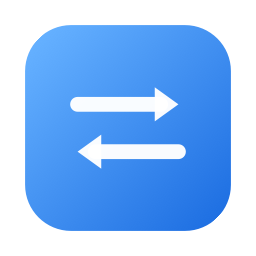

Move a whole development project between your iCloud Drive archive and your local working disk — without breaking git, virtualenvs or Xcode.
Free & open source (MIT) · macOS 26+ · signed & notarized DMG · Sparkle auto-updates
~/Documents/GitHub
On iCloud Drive. Synced across your Macs, slow for file operations, right for projects you are not touching at the moment.
~/DevApps
A plain local directory. Nothing intercepts your writes, so git, builds and package managers behave normally.
Pull a project out of the archive to work on it, push it back when you are done. The same guarantees apply in both directions.
Detects git, Node, Python, Xcode, Rust and Go projects. Python virtualenvs are recreated on arrival — a venv hardcodes its own path and cannot simply be relocated.
Files that exist only in the cloud are materialized before the move. When iCloud's FileProvider makes a plain mv time out, the transfer falls back to a verified copy-then-delete.
Taking a project leaves a trace at its place in the shared archive — which Mac took it, and when — so a second Mac cannot take the same project until it is returned. A Release button clears a stale trace by hand.
Generates a unified INDEX.md covering archive and active side by side — category folder, detected stack, disk size, and the description read from each project's README — and writes an identical copy into both roots.
A menu bar dashboard for quick transfers, plus a window with two hierarchical lists: collapsible folders, ⌘/⇧ multi-select, search, and per-root counters and disk usage.
Everything is downloaded first. iCloud Drive keeps evicted files around as placeholders. MoveApps forces the whole project to be materialized locally before anything moves, so nothing is silently lost on the way.
The move survives iCloud's FileProvider. A native mv between the two roots can fail with Operation timed out even though both live on the same volume. MoveApps then copies, verifies the file count, and deletes the source only once the copy is confirmed complete.
The project is put back together. Stack-specific fixups run at the destination — virtualenvs rebuilt, git state checked before and after, leftover references to the old path and broken symlinks reported.
You can watch it happen. A dedicated Debug window traces each step of a transfer live, including a single self-updating line for the iCloud download (files fetched, elapsed time, budget) — useful when a large project is taking its time.
One exception: the top-level Templates folder holds shared scripts referenced by relative path from both roots, so a transfer copies it instead of moving it, and never places a lock on it.
MoveApps.app into Applications.Requires macOS 26.0 or later. After the first install, MoveApps checks for new versions at launch through Sparkle and offers them to you — it never installs anything without your confirmation.
Prefer to build it yourself:
brew install xcodegen
git clone https://github.com/vincentlauriat/MoveApps.git
cd MoveApps
xcodegen generate
open MoveApps.xcodeproj # then ⌘RThe design is written up in ARCHITECTURE_EN.md, and day-to-day usage in the user guide. A legacy shell script, move-app.sh, remains in the repo as a CLI fallback but is no longer actively maintained.